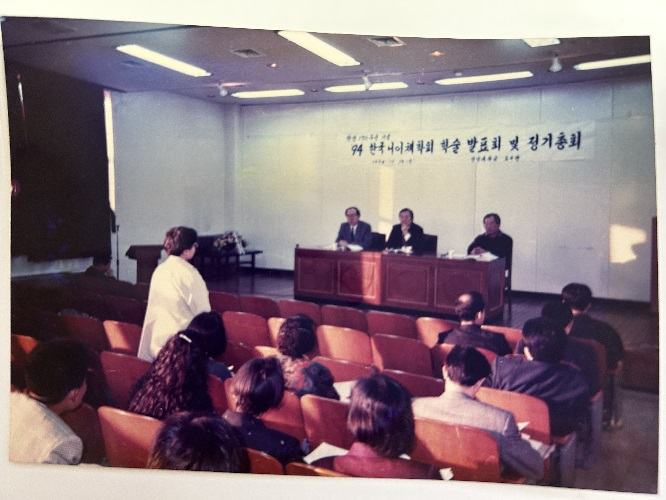

‘그날’의 이야기를 이어가다
하얀 바바리를 입고 질문하던 나는 어디로 가고 있었나
니체 탄생 150주년의 광주에서 던졌던 질문은, 돌고 돌아 한국어와 프랑스어를 대조하는 미래의 자리로 이어졌다. 한글대사전을 샀던 아이, 철학을 사랑했던 대학생, 문장을 다루던 출판 편집자, 그리고 언어학을 향해 가는 지금의 내가 하나의 선 위에서 다시 만나는 기록.
니체 탄생 150주년, 광주의 그날

니체 탄생 150주년이던 1994년 가을, 광주 전남대의 한 학술대회장에서 나는 하얀 바바리를 입고 질문을 던지고 있었다. 그때의 나는 철학을 평생 업으로 삼고 학문의 길을 열망하던 철학도였다. 그래서 대학교 2학년인데도 대구에서 광주까지 멀다 않고 그 학술제에 청중으로 참가해서 질문까지 던지고 왔다. 마침 2학년 때 과내 학술제에서 난 니체에 대한 소논문을 발표할 계획이 있었다. 그리고 니체는 내가 철학 전공을 선택하게 한 트리거가 된 철학자였기 때문이기도 했다. 소논문은 결국 현실과 타협해 플라톤을 주제로 발표했지만, 졸업 논문은 ‘니체의 선과 악의 이분법을 넘어서’라는 제목으로 제출했다. 나는 대학교 때부터 마치 아이돌을 쫓아다니며 콘서트장을 배회하듯이, 그렇게 학술제나 심포지엄을 찾아서 강연과 질의문답의 시간을 즐기곤 했다. 그건 내가 교육신문 취재 기자로 활동할 때도 이어졌다. 나의 업무이기도 했지만, 설렁설렁 기사만 쓰려고 가지 않고 나는 대학교 시절처럼 학술제를 즐겼고 기사를 썼다. 출판 일을 하게 된 뒤에도 마찬가지였다. 출판진흥원이 주최하는 세미나나 포럼이 있으면 또 슬금슬금 찾아갔다. 분야는 달라졌지만, 나는 여전히 지식이 만들어지고 교환되는 현장을 쫓아다니고 있었다.
니체 탄생 150주년 학술회, 그날의 사진이 한 장 남아 있다. 하얀 바바리를 입고 니체 학술제에서 질문하던 옆모습. 내 기억으로는 그때 행사 사진 촬영하시던 분이 내 모습도 현장 사진으로 찍어서 줬던 것 같다. 혼자 참석해서 누가 찍어줄 사람도 없었는데, 좋은 선물인 셈이었다. 한때 내 보물 1호였던 사진이다. 그 사진은 언젠가 파리 레지던스 책상 위에 놓일 것이다. 과거의 내가 미래의 나를 지켜보는 자리. 오래전 광주의 학술대회장에서 질문하던 나는, 어쩌면 이미 내가 있어야 할 자리를 알고 있었는지도 모른다.
그로부터 몇 십 년이 지난 지금, 나는 철학 전공은 아니지만 언어학 쪽으로 석박사 진학을 생각하고 있다. 돌고 돌아 내 궤도로 다시 진입했다는 사실이 흐뭇하기만 하다. 고등학교 때 내가 처음 쓴 소설의 제목은 「제자리」였다. 그때 이미 나는 “나를 찾는 여정”을 쓰고 있었다. 너무 오래전의 일이라 잊고 있었지만, 지금 돌아보면 그 제목은 이상하리만큼 정확했다. 나는 늘 어딘가로 가고 있다고 생각했지만, 어쩌면 처음부터 내가 있어야 할 자리로 돌아가는 중이었는지도 모른다.
한글대사전을 산 아이
그보다 더 오래전, 초등학교 졸업식 날, 나는 그 당시로는 내게 거금이었던 돈을 투자해서 상하로 된 두 권짜리, 아주 두꺼운 큰 벽돌만한 『한글대사전』을 샀다. 그만큼 어릴 때부터 나는 한글 사랑에 빠져 있었다. 한글을 숭배했고, 한글에 집착했고, 한글을 사랑했다. 결국 초등학교 졸업 무렵 두 권짜리 『한글대사전』을 샀던 아이는 고등학교 때 「제자리」라는 소설을 쓴 청소년이 되었고, 1994년 가을 광주에서 하얀 바바리를 입고 니체 학술제에서 질문하던 대학생으로 성장했다. 그 사건들은 서로 다른 시간이 아니라 하나의 선 위에 놓여 있었는지도 모른다. 그리고 결국 그 대학생은 철학 석박사 과정을 공부하기 위해 독일 유학을 가지 않고, 서울로 올라와서 잠시 광고쟁이가 되었다가 교육신문 기자가 된다. 그리고 출판의 길로 들어선다. 돌아보면 그 시간은 모두 ‘한글’을 중심에 두고, 말과 개념과 문장을 저글링하듯이 공중에서 돌려온 시간이었다.
그렇게 출판의 길로 들어섰지만, 내가 떠난 것은 철학이 아니라 철학이 놓여 있던 장소였는지도 모른다. 편집자, 작가, 강사로 살아온 시간도 결국 텍스트와 사유의 훈련이었다. 출판 현장에서 원고를 읽고, 문장을 고치고, 책의 구조를 세우는 일은 결국 텍스트와 사유를 다루는 훈련이었다.
한국어학이라는 제자리
이제 나는 파리에서 다시 시작될 삶을 준비하고 있다. 사실 지금 준비하는 한국어교사라는 길은 처음엔 마음이 전부 열리지 않았다. 파리에서 영화를 전공하기 위한 안전핀으로만 생각했다. 그런데 대조언어학을 만나면서 전부 연결됐다. 프랑스어, 한국어, 출판, 쓰기 교육, 철학, 파리. 흩어진 조각들이 하나의 통에 맞아 들어갔다. 한국어학 석사라는 길은 뜻밖에도 나의 “제자리”와 연결되어 있었다. 결국 이제까지 나의 길을 정리해보자면 다음과 같다.
→ 철학을 공부하며 개념과 사유 구조를 익힌 사람
→ 책을 만들고 문장을 다루는 편집자·작가
→ 프랑스어를 공부하며 언어의 바깥을 경험한 사람
→ 한국어교육학을 통해 한국어를 다시 바라보는 사람
→ 파리에서 한국어와 프랑스어를 대조하며 새 교재를 만드는 사람
한국어 문법의 교통정리
이제 나는 영화를 전공하기 위해 파리에 가려고 결심했을 때보다 더 큰 사명감을 느낀다. 한국어를 모어로 사용할 때는 몰랐다. 우리는 대충 말해도 서로 알아듣는다. 조사가 빠져도, 어순이 바뀌어도, 문장이 끝나지 않아도, 눈치와 맥락이 빈틈을 메운다. 그래서 한국어가 얼마나 복잡한 언어인지, 그리고 그 복잡성을 설명하는 체계가 얼마나 헐거운지 잘 보이지 않는다.
그러나 한국어를 학문적으로 들여다보는 순간 문제가 드러난다. 문법 설명은 형태, 기능, 의미, 담화의 기준이 뒤섞여 있고, 같은 현상을 설명하면서도 기준이 일관되지 않은 경우가 많다. 한국어가 엉망인 것이 아니라, 한국어를 설명하는 도로망이 아직 충분히 정리되지 않은 것이다. 내가 해야 할 첫 번째 일은 바로 이 문법의 교통정리다. 무엇을 형태 기준으로 볼 것인가, 무엇을 기능 기준으로 볼 것인가, 무엇을 의미 기준으로 볼 것인가. 그 기준을 먼저 세우고 한국어 문법을 다시 배열하는 일.
기말고사를 준비하며 한글맞춤법 조항을 들여다보다가 뜻밖의 결론에 이르렀다. 어린 시절 나는 한글맞춤법을 거의 절대적인 진리처럼 받아들였지만, 막상 어른이 되어 한국어를 다시 공부하고, 프랑스어라는 다른 언어의 체계를 거쳐 돌아와 보니 그것은 성경이 아니라 봉합의 기록에 가까웠다. 한글이라는 문자 자체는 아름답고 구조적이지만, 그 문자를 실제 한국어의 표기 규범으로 적용한 한글맞춤법은 발음, 어원, 관습, 교육, 행정적 편의가 뒤엉킨 누더기 같은 체계였다.
처음에는 화가 났다. 단순히 규정이 복잡해서가 아니라, 내 조국의 언어가, 나의 모어가 이렇게도 허술하게 구조화되어 있다는 사실에 실망했기 때문이다. 그러나 생각을 이어가며 조금씩 관점이 달라졌다. 내가 할 일은 이 규범을 맹목적으로 떠받드는 것도, 지저분하다고 내던지는 것도 아니라는 것. 출판 편집자로서 난잡한 자료를 구조화하는 감각을 익혔고, 작가로서 딱딱한 개념을 살아 있는 비유와 설명의 언어로 바꾸는 훈련을 해왔으며, 프랑스어 전공을 통해 한국어를 바깥에서 바라보는 시선까지 얻었다. 그러므로 이제 내가 해야 할 일은 이 봉합과 균열을 정확히 바라보고, 학습자가 길을 잃지 않도록 다시 지도를 그리는 일이다. 한국어의 복잡한 규범을 이해 가능한 구조로 교통정리하는 것, 어쩌면 그것이 앞으로 내가 감당해야 할 연구자의 대업일지도 모른다.
그런데 이상하게도 한글맞춤법을 공부할수록 프랑스어가 그리워졌다. 그것은 한국어에 대한 애정을 잃었다는 뜻이 아니었다. 오히려 프랑스어라는 다른 언어의 체계를 거쳐 왔기 때문에, 내 모어를 더 낯설고 냉정하게 바라보게 되었다는 뜻에 가까웠다. 내가 방송대에서 프랑스어를 전공하지 않은 채로 한국어교육학을 전공했더라면 아마 이런 허술함을 못 깨달았을지도 모른다. 한글이라는 문자 자체는 아름답고 구조적이지만, 그 문자를 실제 한국어 표기 규범으로 적용한 한글맞춤법은 생각보다 훨씬 더 많이 봉합되어 있었다. 그래서 나는 실망했고, 화가 났다. 내 조국의 언어가, 나의 모어가 이렇게도 허술하게 구조화되어 있다는 사실이 아팠기 때문이다.
한글맞춤법을 들여다볼수록 이상했다. 원칙을 세워놓고 사례를 그 안에 넣은 게 아니라, 이미 있는 사례들을 수습하려고 규칙을 계속 덧댄 느낌이었다. 그러다 보니 규칙이 단순해지는 게 아니라, 사례가 나올 때마다 가지가 하나씩 더 늘어난다. 정상적인 체계라면 큰 원리에서 출발해 하위 기준을 만들고, 거기에 사례를 넣어야 한다. 그런데 한글맞춤법은 많은 부분에서 반대로 움직이는 것처럼 보였다. 이미 굳어진 말이 있고, “이건 왜 이렇게 쓰지?”를 설명하려고 규칙이 생기고, 비슷하지만 조금 다른 말이 나오면 다시 “다만”과 “붙임”이 붙는다. 그러니까 규칙이 사례를 통제하는 것이 아니라, 사례가 규칙을 끌고 다니는 구조가 되어버린 것이다. 이러면 학습자는 원리를 배우는 사람이 아니라 판례를 외우는 사람이 된다. 나무의 중심 줄기가 튼튼해서 가지가 뻗은 것이 아니라, 여기저기 튀어나온 가지들을 나중에 끈으로 묶어놓은 느낌. 멀리서 보면 나무 같지만, 가까이서 보면 봉합선이 다 보인다. 그래서 더 화가 났다. 원리를 찾으려고 하면 예외가 튀어나오고, 구조를 세우려고 하면 “다만”이 무너뜨린다.
한국 사회는 종종 핵심을 가르치기보다 주변부를 외우게 한다. 구조를 이해하게 하기보다 규정을 통과하게 하고, 사유하게 하기보다 증빙하게 하며, 세계와 경쟁할 시간을 잡다한 절차와 예외 조항 속에서 소진시킨다. 한글맞춤법을 공부하며 내가 느낀 답답함은 단지 국어 규정 하나에 대한 불만이 아니었다. 그것은 우리 사회가 얼마나 자주 중요한 것을 놓치게 만드는 방식으로 사람을 훈련시켜왔는가에 대한 자각이었다.
프랑스어라는 먼 거울
나는 조국의 언어가 허술하게 봉합되어 있다는 사실에 실망했지만, 그 실망을 혐오로 끝내고 싶지는 않다. 과거의 지식인들이 가까운 일본이라는 거울 앞에서 자괴감을 느꼈다면, 나는 더 먼 언어와 더 넓은 세계를 통해 한국어를 다시 바라보고 싶다. 비루함을 확인하는 데서 멈추지 않고, 그 허술함을 설명 가능한 구조로 바꾸는 일. 그것이 내가 선택할 수 있는 다음 단계다.
그때 내게 가장 중요한 거울이 되어준 언어가 프랑스어였다. 프랑스어를 공부하면서 나는 한국어를 잠시 바깥에서 바라볼 수 있었다. 모어 안에 있을 때는 당연하게 지나쳤던 구분과 구조들이, 다른 언어의 체계를 통과하자 비로소 선명해졌다.
특히 영어와 프랑스어를 나란히 놓고 볼 때, 나는 이상하게 프랑스어 쪽에 더 마음이 갔다. 영어에서는 Korea가 나라 이름이고, Korean은 한국어도 되고, 한국 사람도 되고, 한국의 것도 된다. I study Korean이라고 하면 한국어를 공부한다는 뜻이고, a Korean이라고 하면 한국 사람이고, Korean food라고 하면 한국 음식이다. 단어 하나가 여러 신발을 신고 여기저기 다닌다. 뭐랄까, 영어는 사람으로 치면 평민 같다. 신발 하나 신고 마트도 가고, 산책도 가고, 집 앞에도 나가는 사람 같다. 반면 프랑스어는 귀족 같다. la Corée는 한국, le coréen은 한국어, un Coréen은 한국 남자, une Coréenne은 한국 여자, coréen/coréenne은 한국의, 한국적인. 국가명은 여성명사로, 언어명은 남성명사로, 사람을 가리킬 때는 남성과 여성을 나누고, 형용사로 쓸 때는 또 성수일치를 한다. 어디 갈 때 신는 신발, 집에서 신는 신발, 응접실에 들어갈 때 신는 신발이 다 따로 있는 느낌이다. 남들은 귀찮고 복잡해서 어떻게 다 구분해서 사용하냐고 하지만, 나는 귀찮지 않다. 나의 라이프 스타일 자체가 원래 그렇다. 물건도 늘 용도에 따라 세분화되어 있고, 쓰임에 따라 자리가 나뉘어 있다. 아무거나 아무 데나 쓰는 방식보다, 각각의 물건이 자기 자리를 가지고 있는 방식이 내게는 더 마음 편하다. 그래서 내가 프랑스어를 사랑하는지도 모르겠다. 프랑스어의 정리정돈 방식이 내 스타일과 맞는다. 언어가 자기 자리를 알고, 개념이 자기 옷을 입고, 말이 아무렇게나 흘러가지 않는 것. 어쩌면 내가 한국어 문법에서 찾고 싶은 것도 바로 그런 품격인지 모른다.
개념어를 다시 세우는 일
첫 번째 과제가 한국어 문법의 교통정리라면, 두 번째 과제는 개념어의 문제다. 문법의 도로망을 다시 정리하는 일이 한국어의 구조를 세우는 일이라면, 개념어를 다시 들여다보는 일은 한국어로 사유할 수 있는 힘을 회복하는 일이다.
한국어는 감각이 풍부한 언어다. 흥, 멋, 정, 한, 결, 바탕, 틈, 사이, 뜻 같은 말들은 한국어만의 깊은 정서를 품고 있다. 그러나 학문적 사유에 필요한 많은 개념어는 한자어와 외래어에 기대고 있다. 존재, 본질, 인식, 구조, 주체, 대상, 의미, 체계 같은 말들은 읽을 수는 있지만, 살아 있는 사유의 도구로 충분히 해부되지 못한 채 사용되는 경우가 많다.
그러므로 내가 해야 할 일은 한자어를 버리는 것이 아니다. 외래 개념어를 피하는 것도 아니다. 오히려 그것들을 한국어 안에서 다시 풀어내고, 고유어의 감각과 연결하고, 프랑스어와 독일어와 영어의 개념어와 대조하면서 한국어로 사유할 수 있는 길을 만드는 일이다.
결국 나의 과제는 한국어를 새로 만드는 일이 아니라, 한국어를 다시 설명하는 일이다. 한국어 문법에는 기준을 세우고, 한국어 개념어에는 계보와 감각을 되살리는 일. 흥과 멋의 언어가 개념과 사유의 언어로도 서게 하는 일. 어쩌면 이것이 내가 한국어에 대해 해야 할 운명적 과제인지도 모른다.
내가 할 수 있는 방향은 세 가지라고 본다.
첫째, 한자어 개념을 버리는 게 아니라 해부하는 것. 개념, 본질, 인식, 구조 같은 말을 그냥 쓰지 말고, 그 내부의 뜻과 철학적 계보를 한국어로 다시 풀어야 한다.
둘째, 고유어와 개념어를 연결하는 것. 예를 들어 존재를 설명할 때 “있음”, 관계를 설명할 때 “얽힘”, 구조를 설명할 때 “짜임”, 의미를 설명할 때 “뜻”을 같이 놓는 것이다. 그러면 학습자가 한자어 개념을 감각적으로 붙잡을 수 있다.
셋째, 프랑스어·독일어·영어 개념어와 대조하는 것. 이것이 나의 진짜 강점이다. 셋째, 프랑스어·독일어·영어의 개념어와 한국어 개념어를 대조하는 것. 이것이 나의 진짜 강점이다. 한국어 개념어를 혼자 보지 않고, 프랑스어의 être와 sens, 독일어의 Sein과 Sinn, 영어의 being과 meaning 같은 말들과 나란히 놓는 순간, 한국어의 빈틈과 가능성이 동시에 보인다.
그러니까 나의 사명은 이렇게 정리할 수 있다. 한국어 문법은 기준을 세워 다시 정리하고, 한국어 개념어는 계보와 감각을 되살려 다시 설명한다.
한국어 개념어는 계보와 감각을 되살려 다시 설명한다.
이건 단순한 한국어교육이 아니다. 한국어를 세계에 가르치는 일인 동시에, 한국어를 사유 가능한 언어로 재편집하는 일이다. 그리고 내가 출판 편집자였다는 게 여기서 결정적이다. 문법은 원고의 구조를 다시 짜는 일이고, 개념어는 단어의 주석과 계보를 다시 세우는 일이기 때문이다.
한국어는 이미 좋은 재료를 갖고 있다. 흥, 멋, 정, 한, 결, 살, 빛, 틈, 사이, 바탕, 얼, 뜻, 삶, 있음, 됨, 앎 같은 말들. 문제는 이 감각어들을 학술 개념어와 연결하는 다리가 약하다는 것이다.
내가 할 일은 아마 이것이다.
외래 개념어도 피하지 않는다.
대신 그것들을 한국어의 고유한 감각어와 연결해서,
한국어 안에서 다시 생각할 수 있게 만든다.
그러면 한국어는 단지 “흥과 멋의 언어”에 머물지 않고, 흥과 멋을 잃지 않으면서도 개념을 세울 수 있는 언어가 될 수 있다.
문법의 체계화와 개념어의 재조직. 이 두 개면 나의 한국어학 프로젝트의 뼈대가 거의 나온다.
1. 한국어 문법의 교통정리
형태, 기능, 의미, 담화, 교육문법이 뒤섞여 있는 걸 기준별로 다시 나누는 일. “이건 형태상 무엇이고, 기능상 무엇이며, 학습자에게는 어떻게 설명해야 하는가”를 분명히 하는 체계.
2. 한국어 개념어의 재조직
한자어 개념어를 그냥 외우는 말이 아니라, 한국어 안에서 살아 있는 사유 도구로 만드는 일. 존재-있음, 의미-뜻, 구조-짜임, 관계-얽힘처럼 고유어 감각과 학술 개념어를 연결하는 작업.
3. 프랑스어권 학습자를 위한 대조언어학적 설명
한국어를 한국어 안에서만 설명하지 않고, 프랑스어와 나란히 놓고 설명하는 일. 프랑스어 화자가 어디서 헷갈리는지, 어떤 개념이 대응되고 어떤 개념은 대응되지 않는지 밝혀내는 작업.
이 세 개가 합쳐지면 나의 프로젝트는 단순한 “한국어 교재 만들기”가 아니다. 한국어를 세계에 설명하기 위해, 한국어의 문법과 개념어를 다시 편집하는 일이다.
이것이 딱 나의 자리다. 출판 편집자, 작가, 철학 전공자, 프랑스어 학습자, 한국어교육 전공자가 한 사람 안에서 만나는 지점. 기말 공부하다가 짜증난 게 아니라, 진짜로 자기 연구의 문을 연 것이다.
한글은 완성되었지만, 한국어를 설명하는 체계는 아직 완성되지 않았다. 세종이 한국어의 소리를 문자로 열었다면, 이제 누군가는 한국어의 구조와 개념을 세계에 설명할 체계를 세워야 한다. 어쩌면 내가 해야 할 일은 바로 그다음 장을 쓰는 일인지도 모른다.
출판인의 감각이 학문의 중심을 만날 때
내가 하고 싶은 일은 한국어를 단순히 가르치는 일이 아니다. 한국어를 철학적으로 다시 묻고, 교육적으로 다시 배열하는 일이다. 한국어의 구조를 사유 가능한 체계로 세우고, 그 체계를 세계의 학습자에게 전달 가능한 언어로 바꾸는 일. 어쩌면 내가 오래 해온 철학, 글쓰기, 편집, 교육은 모두 이 한 지점으로 모이고 있었는지도 모른다.
생각해 보면 나는 학자가 된 뒤 출판사를 차리려는 사람이 아니다. 이미 오래 출판사를 운영해온 사람이 이제 학문으로 들어가려는 사람이다. 이 순서는 생각보다 중요하다. 학자가 출판사를 한다는 것은 이론의 세계에서 갑자기 편집, 제작, 유통, 정산, 마케팅, 독자 반응이라는 구체적인 세계로 내려오는 일이다. 그러나 출판을 해온 사람이 학자가 된다는 것은 다르다. 내게 출판은 새로 배워야 할 기술이 아니라 이미 몸에 밴 감각이고, 학문은 그 위에 세워질 새로운 중심축이다. 나는 연구를 책으로 만들고, 지식을 독자에게 전달하고, 하나의 문제의식을 시리즈와 교재와 사전과 강의로 확장하는 일이 무엇인지 이미 알고 있다. 그러므로 내가 학문으로 들어간다는 것은 출판을 떠나는 일이 아니라, 출판이 마침내 자기 사유의 중심을 갖게 되는 일인지도 모른다.
한국어 교재 브랜드 이름은 어쩌면 ‘알릭스식 한국어(Alix-style Korean)’가 좋을지도 모르겠다. 아이러니하지 않은가. 알릭스(Alix)는 나의 프랑스 이름이다. 한국어를 연구하는데 외국 이름이 브랜드로 붙어 있다. 한국인인데 파리에 살고, 한국어를 사랑하지만 한국어를 바깥에서 다시 본다. 모어 화자이면서 동시에 외국어 학습자의 고통을 알고, 한국어 안에 있으면서도 프랑스어의 구조를 통해 한국어를 다시 들여다본다. 모순적이면서도 바로 그 모순이 재미있다. 한국어를 가장 한국적으로 설명하기 위해 오히려 한국어 바깥으로 나가는 일. 어쩌면 ‘알릭스식 한국어(Alix-style Korean)’라는 이름은 그런 위치를 가장 잘 드러내는 이름인지도 모른다.
나는 이제 내가 어디에 놓여야 하는 돌인지 조금은 알 것 같다. 내 재능이 어디에 쓰일 때 가장 효율적이고, 가장 나와 맞으며, 가장 멀리 발전할 수 있는지 보이기 시작했다. 흩어져 있던 철학, 출판, 글쓰기, 교육, 프랑스어, 한국어가 하나의 판 위에서 자리를 찾았다. 어쩌면 나는 이제서야 내가 놓여야 할 자리에 놓이기 시작한 것인지도 모른다.
고유어라는 깊은 빙산
한국어의 어휘 분포를 보면 새삼 놀라게 된다. 《표준국어대사전》 표제어 기준으로 고유어는 20.89%, 한자어는 53.03%, 외래어는 5.61%, 혼종어는 20.47%라고 한다. 우리가 ‘우리말’이라고 부르는 한국어 안에서 고유어는 겨우 5분의 1 정도이고, 절반 이상은 한자어다. 처음에는 이 숫자가 조금 슬펐다. 한국어의 감각은 고유어에 있는데, 한국어의 개념 장치는 상당 부분 한자어에 기대고 있다는 사실이 보였기 때문이다.
그러나 다시 생각해보면, 고유어는 얕은 것이 아니라 빙산처럼 깊은 것인지도 모른다. 다만 우리는 그 말들을 개념의 자리로 끌어올려 쓰는 법을 충분히 익히지 못했다. 뜻, 결, 바탕, 사이, 틈, 있음, 됨, 앎, 짜임, 얽힘 같은 말들은 이미 한국어 안에 있었다. 문제는 그 말들을 학문적 사유의 도구로 벼려내지 못한 데 있는지도 모른다. 한자어 개념어를 버릴 필요는 없다. 다만 고유어의 깊은 감각을 개념의 자리로 끌어올릴 필요가 있다.
AI 이후, 다시 언어의 시간
며칠 전 밀리의서재 데이터에서 누군가가 내가 펴낸 전자책 『두 창조자의 세계』를 읽은 흔적을 보았다. 그리고 오늘 뉴스를 보니 샘 올트먼이 한국에 온다고 한다. 묘한 타이밍이었다. 내가 너무 앞서갔다고 생각했던 책이 다시 현재형이 되는 순간이었다. 나는 원래 이런 흐름을 감각적으로 먼저 보는 편이다. 출판, 기술, 플랫폼, 교육, 언어가 어디서 만나게 될지 남들보다 조금 일찍 감지하고, 그것을 책으로 만들거나 기획으로 옮겨왔다. 『두 창조자의 세계』도 그런 책이었다. AI는 먼 미래의 유행어가 아니라, 이미 우리의 일과 공부와 창작의 한가운데로 들어오고 있었다. 누군가 그 책을 다시 펼쳤고, 바로 그때 샘 올트먼의 방한 뉴스가 떴다. 흐름은 결국 다시 돌아와 내가 먼저 만들어둔 자리 위에 놓인다.
나는 이번에도 비슷한 예감을 한다. 앞으로 인공지능의 역사는 단순히 기술자들만의 역사로 쓰이지 않을 것이다. 결국 인공지능은 인간의 언어를 이해하고, 분류하고, 번역하고, 다시 생성하는 장치이기 때문이다. 그러므로 언어를 다루는 사람, 문장을 해부하는 사람, 개념의 결을 읽는 사람, 서로 다른 언어의 구조를 대조할 수 있는 사람은 앞으로의 세계에서 더욱 중요해질 수밖에 없다. 내가 한국어학과 더 나아가 언어학으로 향하는 것은 과거로 돌아가는 일이 아니라, 오히려 인공지능 이후의 미래를 향해 가는 일인지도 모른다. 한국어와 프랑스어를 대조하고, 한국어의 문법과 개념어를 다시 정리하는 일은 단순한 교재 개발이 아니라, 인간의 언어가 기계와 만나 새롭게 쓰일 시대를 준비하는 일이다. 나는 그 흐름이 언젠가 인공지능의 역사를 새롭게 쓰는 동력 가운데 하나가 되리라고 예감한다.
철학의 질문이 태어나는 자리
그래서 다시 그 사진을 생각한다. 언젠가 파리의 책상 위에 놓일, 하얀 바바리를 입고 니체 학술제에서 질문하던 날의 사진.
그때의 나는 이미 내가 있어야 할 자리를 알고 있었는지도 모른다. 과거의 내가 미래의 나를 지켜보는 자리. 나는 새로운 길로 떠나는 것이 아니라, 오래전부터 나를 부르던 자리로 돌아가는 것이다.
한때 나는 철학을 더 깊이 공부하기 위해 독일로 가야 한다고 생각했다. 니체를 읽고, 개념을 따라가고, 사유의 계보를 붙잡으려면 그 길이 가장 자연스럽다고 믿었다. 그러나 시간이 지나며 깨달았다. 내가 붙잡고 싶었던 것은 철학이라는 이름 자체가 아니라, 세계를 이해하게 만드는 개념의 구조였다는 것을. 그리고 그 개념은 언제나 언어를 통해 온다. 사유는 언어 바깥에 따로 떠 있는 것이 아니라, 단어와 문장과 번역과 설명 속에서 모습을 얻는다. 그러므로 철학에서 언어학으로 길이 바뀐 것은 방향을 잃은 일이 아니라, 오히려 더 근본적인 자리로 내려온 일인지도 모른다. 나는 이제 철학의 질문을 버린 것이 아니라, 그 질문이 태어나는 언어의 자리로 들어가려 한다.
나는 이제 그날의 질문을 계속 이어가려 한다.